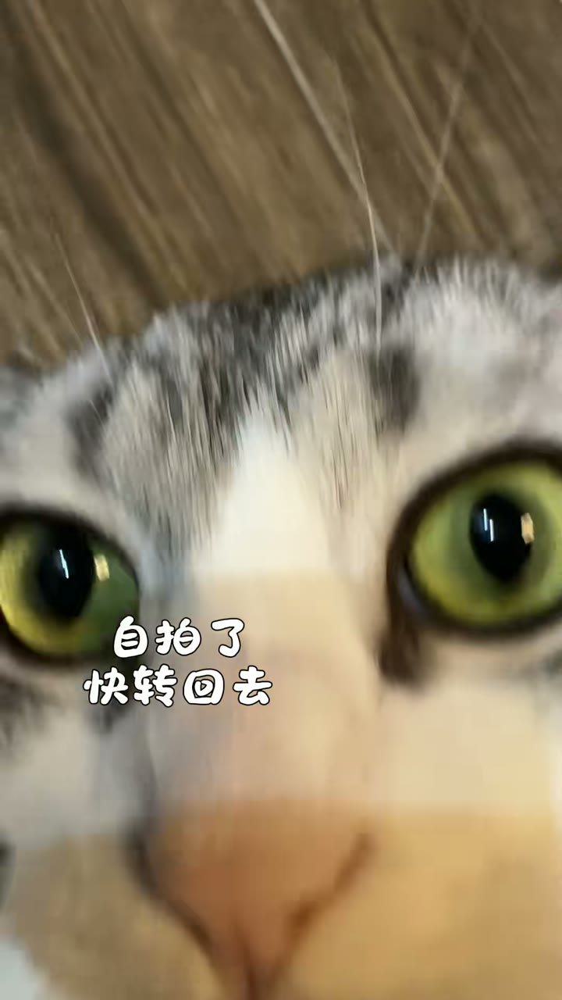

女儿成绩太差了，把它丢出去
有些视频不需要解释，猫的表情已经把故事说完了。
#猫咪#生活幽默
同频
正在出现的新的人
正在替你寻找
在上海，找一个周末能一起散步，也愿意认真聊点什么的人
搭子 · 上海 · 还会运行 6 天
今天新出现 3 人
按彼此合适程度排序消息
接上之后，再慢慢认识
新同频
2对话
我的
别人如何通过品味认识你
夜行观察者
@anhao_001 · 上海
AI 读到的你清晰度 67%
柔软的现实主义者
你容易为真实、不端着的瞬间停下来，也会认真听别人谈关系、成长和城市生活。
我停下来过的内容
6你们都为「女儿成绩太差了，把它丢出去」停下来过。